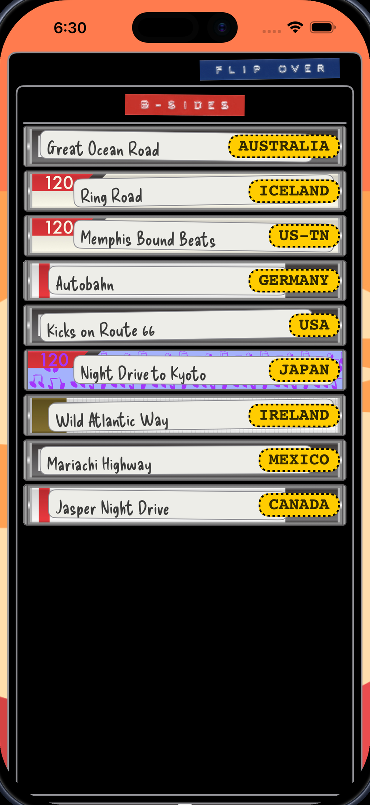
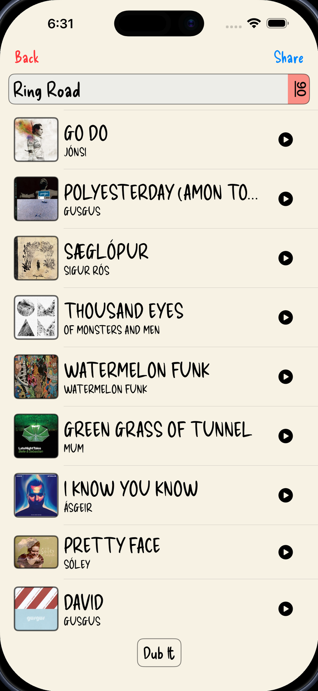
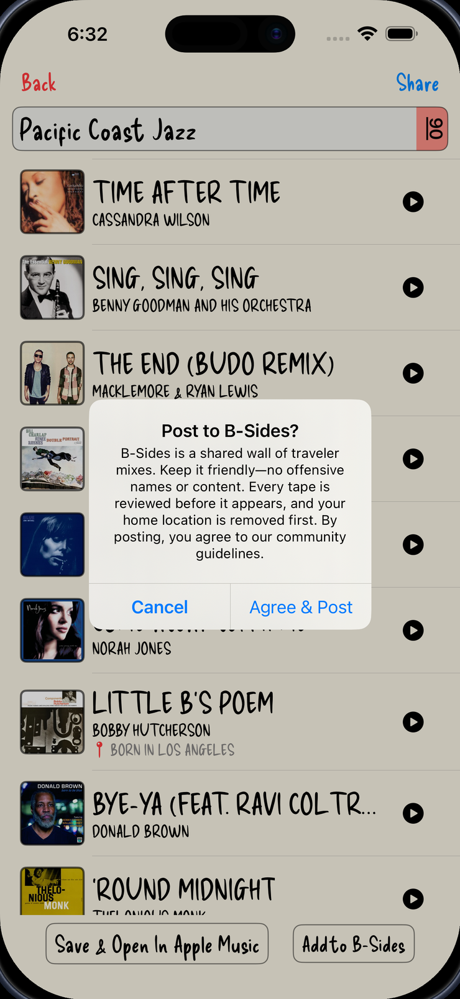
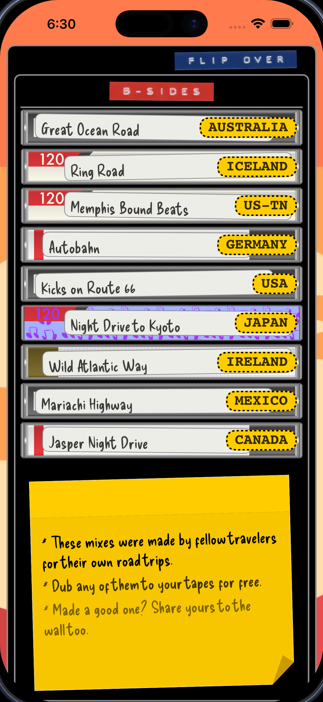

Every mixtape has a flip side.
Turn your tape case over to Side B and you'll find B-Sides — a wall of road-trip mixtapes made by other travelers, for real drives.
Flip through mixes stamped with where they were headed, dub any of them straight into your library — no blank tape required — and pin your own best one to the wall. No accounts, no feed: every tape gets a look from a real human before it goes up.
Flip it over, find your next tape
1Flip the case
Catch the little tab on the edge of your tape case and flip it around to Side B — the flip side of your Trip Tunes library, where everyone else's tapes are hanging.

2Browse the wall
A whole wall of mixtapes other travelers made for real drives — each one stamped with where it was headed, from Route 66 to Iceland's Ring Road. Flip through by place and find the soundtrack to a trip you haven't taken yet.

3Dub it — free
Found a keeper? Dub it straight into your library — no tape spent, just like copying a friend's cassette back in the day. Then send it to Apple Music when you're ready to hit the road.
4Share yours
Made a mix worth passing on? Tape it to the wall right from the preview screen — just your songs and where you were headed, nothing else stuck to it.
No accounts. No feed. No algorithm.
Every tape on the wall is reviewed by a human before it appears — nothing is published automatically. Submissions carry no name and no identity, and your starting point is removed before anything is shared. A tape is just the music and where it was headed.


Built around the road, not a username
These aren't generic playlists. Every Trip Tunes mixtape digs into the local music along a real route — regional artists and hidden gems from the towns it passes through — so a wall tape is a genuine musical postcard from somewhere.
The destination stamp on each one tells you where it was headed, so you can flip through the wall by place and find the soundtrack to a drive you haven't taken yet.
Flip your tape over.
B-Sides arrives in Trip Tunes 2.2 — out July 25, 2026.
Download on theApp Store